Steward
分享是一種喜悅、更是一種幸福
微處理器 - STCmicro STC15W104 - 開發板
參考資訊：
https://github.com/cnlohr/mini-rv32ima
https://github.com/verylowfreq/linux_on_m5stack
https://dmitry.gr/?r=05.projects&proj=07.%20linux%20on%208bit
https://www.tomshardware.com/news/raspberry-pi-pico-risc-v-emulator
司徒最早注意到用8bit MCU跑Linux的專案是如下(ATmega1284p：Flash 128KBytes、RAM 16KBytes、EEPROM 4KBytes)
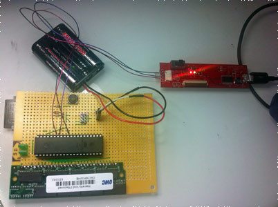
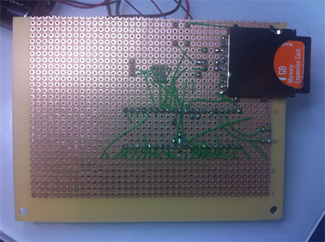
使用PXA255模擬器去跑Linux系統
電路圖如下：
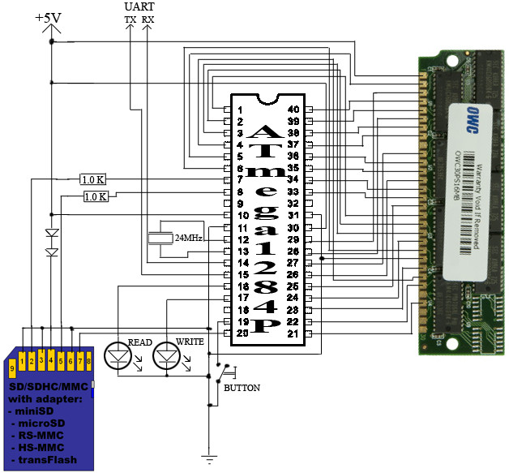
另一個讓司徒注意到的RISC-V模擬器是mini-rv32ima專案，一個超精簡的RISC-V模擬器，可以用來跑Linux 6.x Kernel，而且已經有很多基於mini-rv32ima製作的開源專案
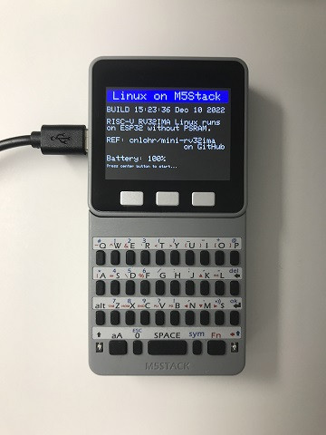
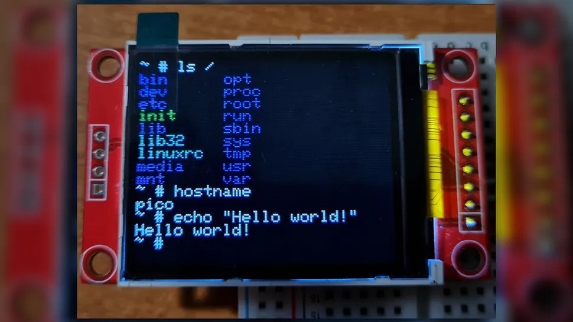
於是再度激起司徒想要嘗試使用極度精簡的8051(STC15W104)透過RISC-V模擬器，用來跑Linux 6.x Kernel，雖然難度可能很高，因為STC15W104只有Flash 4KBytes、RAM 128Bytes、EEPROM 1KBytes，不過總是要實驗才知道是否可行，因此，司徒決定嘗試一下，看看8051是否可以透過RISC-V模擬器跑Linux 6.x Kernel，於是司徒畫了一張電路圖
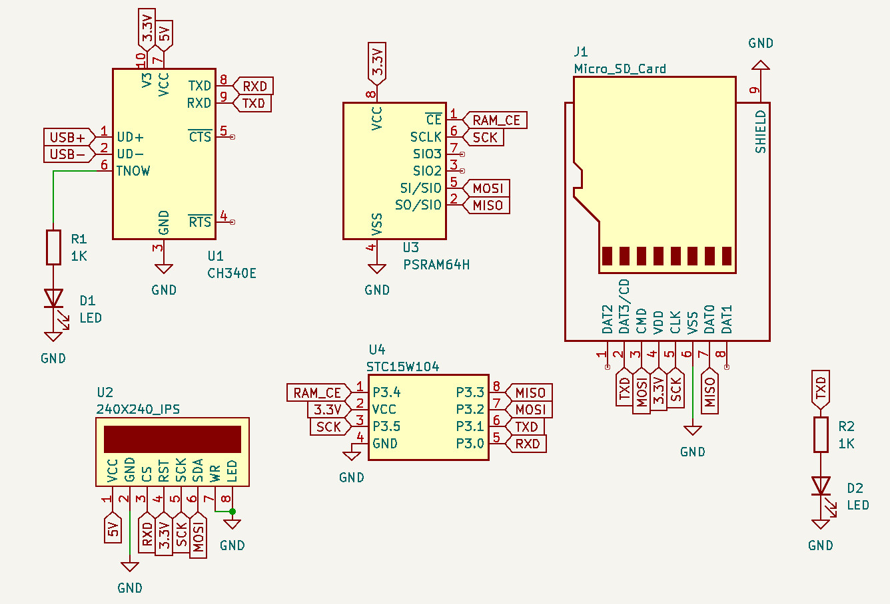
材料
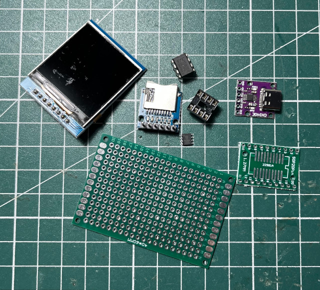
焊接完成
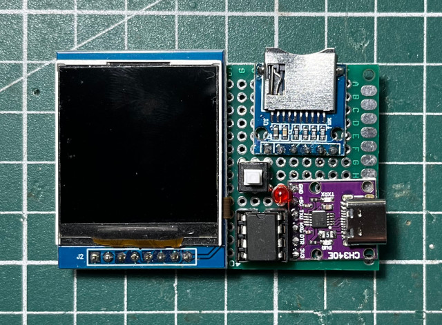
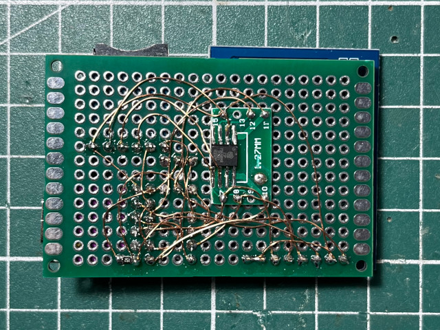
小巧可愛
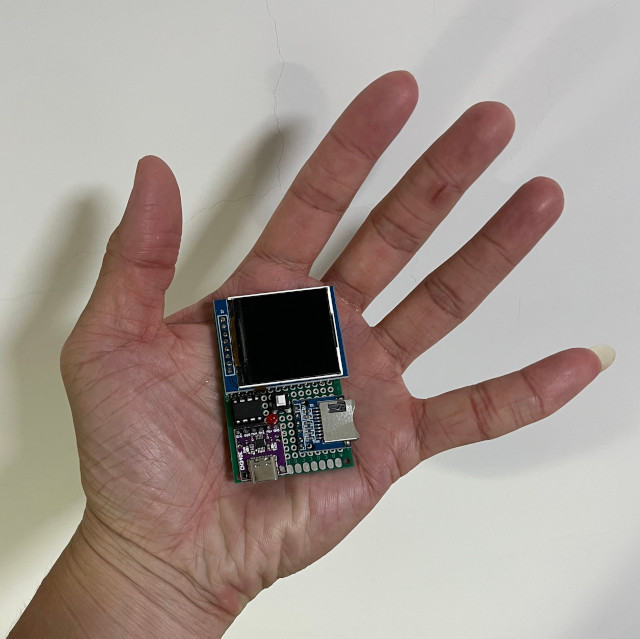
OpenSCAD
difference() {
cube([65, 44, 7]);
translate([3, 3, 2]) cube([59, 38, 5]);
translate([2, 2, 5]) cube([61, 40, 3]);
}
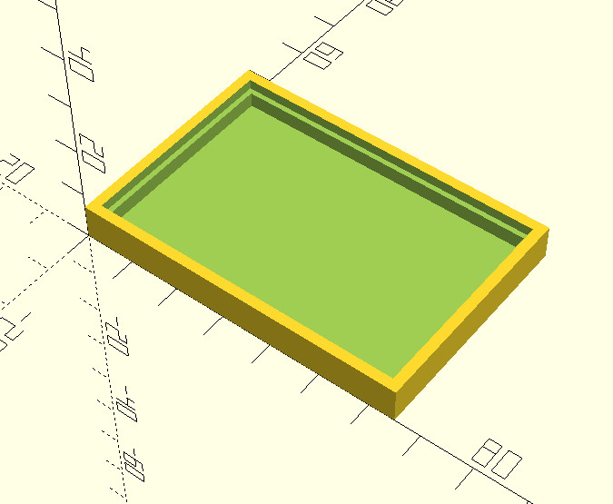
完成
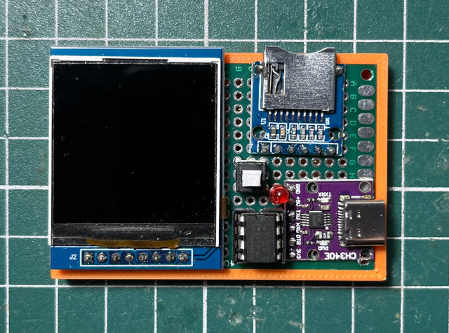
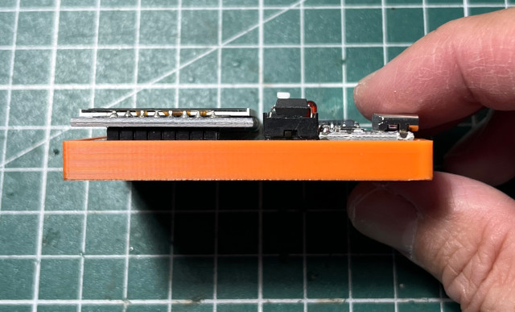
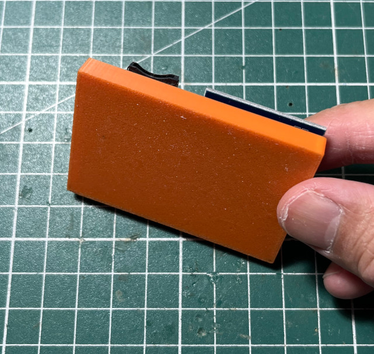